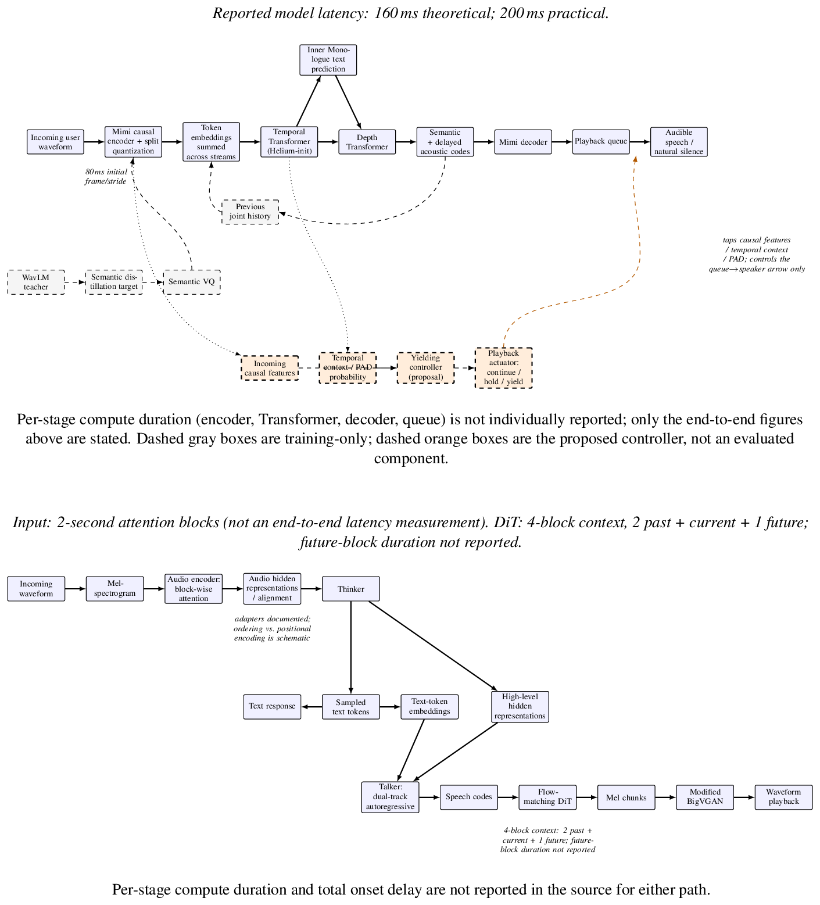
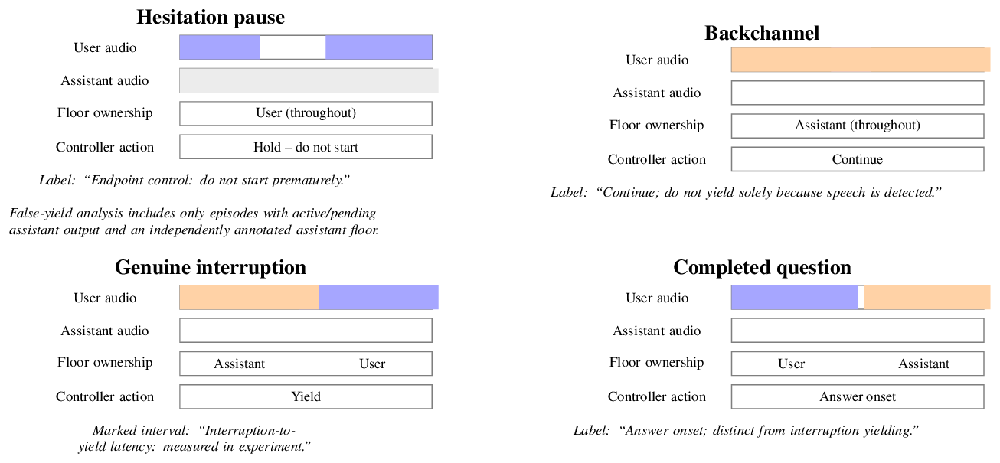

Architecture analysis
Two recent speech LLMs, compared on seven architectural axes, and an answer to the research question: what architectural limitations stop speech LLMs from low-latency, natural, real-time conversation?
The thesis
Streaming speech generation is not sufficient for natural real-time conversation, because conversational control, deciding when to continue, hold, or yield while still listening, is not fully specified as a separate policy in these reports and is not measured by first-audio latency.
This is about control of the conversational floor, not about emitting audio incrementally. Moshi explicitly supports simultaneous listening and speaking, with turn-taking learned inside joint stream modeling. Qwen2.5-Omni describes streaming perception and generation. Those are different kinds of evidence. The research opportunity is to test whether a separately supervised controller can better tell a listener's response from an attempt to take the floor.
Why these two models
- Moshi (Défossez et al., 2024): a full-duplex speech-text foundation model for real-time dialogue. Speech to speech.
- Qwen2.5-Omni (Qwen Team, 2025): a streaming omni-modal model with a Thinker (text LLM) and a Talker (speech generator). Also produces speech.
Both are recent, both stream, and both produce speech, so the "at least one speech-to-speech" requirement is met twice. They also represent two different answers to the same problem: one jointly models both speakers' audio streams, the other bolts a speech decoder onto a multimodal LLM.
Seven-axis comparison
Each cell is a statement from the cited report. Section and page references use the report's printed page numbers.
| Axis | Moshi | Qwen2.5-Omni |
|---|---|---|
| 1. Encoder and representation learning | Mimi: causal SeaNet convolutional codec (strides 4, 5, 6, 8, plus a final stride 2) with 8-layer causal Transformers before and after quantization. 24 kHz audio to 512-d at 12.5 Hz. 8 codebooks of 2,048 entries, 1.1 kbps. (M §3.3.1, pp.10-11) | 128-channel mel input (25 ms window, 10 ms hop), about 40 ms per representation. Audio encoder initialized from Whisper-large-v3, with block-wise attention. (Q §2.2, p.4; §3, p.6) |
| 2. Semantic vs. acoustic representations | Split quantizer: one semantic VQ distilled from WavLM (cosine loss; the non-causal teacher is used in training only) plus a 7-level acoustic RVQ, summed for reconstruction. (M §3.3.2, p.12) | Input: encoder representations. Output: discrete codes from qwen-tts-tokenizer. Talker is conditioned on Thinker hidden states (semantic) plus sampled text-token embeddings (phonetic). (Q §2.3, p.5) |
| 3. Speech-to-LLM alignment | No adapter. Parallel token streams (both speakers' audio plus Moshi's own text) enter a Helium-initialized Temporal Transformer as summed learned embeddings. "Inner monologue" aligns self-text via Whisper timestamps and PAD/EPAD tokens. (M §3.4.1, §3.4.4, pp.13-17) | Adapters align the audio encoder to the Thinker LLM, trained first while the LLM is frozen. Talker consumes Thinker hidden states and text embeddings as a dual-track decoder. (Q §2.1, p.3; §3, p.6) |
| 4. Streaming vs. non-streaming | Causal 80 ms frames. User and system streams modeled jointly so listening and speaking overlap. Reported latency 160 ms theoretical, 200 ms practical. (M abstract, p.1; §3.3.1, p.11) | Block-wise input attention over 2 s blocks. Waveform decoding by a DiT over 4 blocks (2 lookback, 1 lookahead) and chunked BigVGAN. No numerical end-to-end latency reported. (Q §2.4, p.5) |
| 5. Autoregressive vs. non-autoregressive | Hierarchical autoregression: a Temporal Transformer over time and a Depth Transformer over codebooks within a step. Mimi decodes the codes. (M §3.4.1, pp.12-14) | Thinker and Talker are autoregressive. Mel generation is flow-matching (iterative, not token by token) followed by BigVGAN. (Q §§2.1-2.4, pp.3-5) |
| 6. End-of-speech and stopping | No utterance-end token. Continuous streams represent speech or silence. PAD/EPAD structure text timing; they do not command a stop. (M §3.4.4, pp.16-17) | Text EOS and ChatML message boundaries. Interruption handling is not specified. (Q Fig. 2, p.3; §4.1, p.6) |
| 7. Training objectives and data | Helium text pretraining (2.1T tokens), audio pretraining (7M hours, mostly English), multi-stream post-training, Fisher fine-tuning (2,000 h), synthetic instruction tuning (over 20,000 h). Cross-entropy with semantic weight 100, acoustic weight 1. (M §4, pp.17-21) | Frozen-LLM alignment, then all-parameter training (800B image/video, 300B audio, 100B video-audio tokens), context 8k to 32k. Talker: continuation, DPO ranked by WER and punctuation-pause error, speaker tuning. (Q §3, §4.3, pp.6-7) |

What the reports do not specify
These gaps block matched comparison. They do not show a performance failure.
- Neither report fully specifies input-endpoint, playback-completion/flush, or session-stop rules.
- Qwen2.5-Omni leaves interruption handling unspecified.
- Qwen2.5-Omni does not report output-codec rate, codebooks or bitrate; adapter dimensions or depth; output-block duration; numerical end-to-end latency; audio training hours or named corpora; or complete tokenizer objectives.
- Moshi's practical-latency figure comes without a complete measurement protocol.
- Qwen's "causal decoder" wording sits beside a DiT with one lookahead block.
- Per-stage compute durations (encoder, Transformer, decoder, queue) are unreported for both, so no latency budget can be divided across stages.
Three ranked limitations
This is the answer to the research question. Each limitation is interpretation built on the cited mechanisms, not a result either paper reports.
L1. Continuous generation leaves conversational decisions implicit
Moshi's joint streams remove the turn boundary and let it listen while speaking (M §1, p.2; §3.4.4, p.17). What remains open is when that learned behavior correctly keeps or gives up the floor. Moshi evaluates gaps, overlaps and dialogue quality (M §5.6, p.31), but aggregate distributions cannot show whether one backchannel caused an inappropriate stop. Continuous modeling is a prerequisite for studying floor control, not evidence that it is handled well. Qwen2.5-Omni's streaming does not establish event-level behavior either.
L2. Low transport delay does not establish timely social action
Causal frames and hierarchical prediction (Moshi), or block-wise processing and bounded-context waveform decoding (Qwen), shorten the delay between input and output audio. But first-audio latency measures onset, not whether the system stops after a real interruption while talking through a backchannel.
Two trivial strategies expose the problem. Suppressing output whenever speech appears gives fast stopping for free. Refusing to stop gives few false yields for free. Neither is a better conversation. Any evaluation must compare false yields only under common interruption-latency and missed-interruption limits, and the timing account has to include input buffering, controller computation and playback queues.
L3. Available cues and supervision may be insufficient
Speech activity says that someone is making sound, not why. Telling acknowledgment, hesitation and interruption apart needs context, and generation state (is the assistant finishing a phrase, waiting, or mid-explanation?) is a candidate cue whose usefulness has to be tested. Supervision matters too: Moshi notes limits of simulated dialogue without overlap, and Qwen acknowledges noisy speech supervision (M §4.4, pp.20-21; Q §4.3, p.7). A measured gain must be attributed to a controlled intervention, not to differences between training corpora.
"End of speech" is four decisions
End-of-speech detection and stopping criteria are part of the analysis. The key observation is that the phrase conflates four decisions a conversational system must make separately.
| Decision | Meaning | Observable contrast |
|---|---|---|
| Input endpoint | The user has finished the current contribution | Hesitation pause vs. completed question |
| Conversational yield | The assistant gives the user the floor | Backchannel vs. genuine interruption |
| Output completion | The intended response has finished playing | Intended end vs. playback and queue state |
| Session termination | Conversation processing stops running | Explicit stop vs. ongoing listening |
Moshi establishes continuous listening and generation including silence; PAD/EPAD concern text timing, not a stand-alone stop command (M §3.4.4, pp.16-17). Qwen2.5-Omni establishes text and message boundaries and streaming waveform generation (Q Fig. 2, p.3; §§2.3-2.4, p.5; §4.1, p.6). Neither fully specifies the remaining boundaries.

Detailed evidence
Moshi: numbers and training stages
- Mimi encoder: four conv blocks with strides (4, 5, 6, 8) and a final stride-2 convolution; 24 kHz mono to 512-d at 12.5 frames/s. Transformer modules before and after quantization each have 8 layers and 8 heads, causal. (M §3.3.1, p.10)
- 8 codebooks x 2,048 entries = 1.1 kbps at 12.5 Hz. Split quantization: 1 semantic VQ + 7-level acoustic RVQ. (M §3.3.1-3.3.2, pp.11-12)
- WavLM teacher: 1,024-d at 50 Hz, pooled to 12.5 Hz; cosine distillation. (M §3.3.2, p.12)
- Joint sequence has K = 2Q + 1 streams with Q = 8; actual user audio replaces predicted user-stream tokens during interaction. (M §3.4.4, p.17)
- Acoustic delay 2 in pretraining, 1 in fine-tuning. (M §5.3, p.27). Separate ASR/TTS configurations use a 2 s text/audio delay and differ from the conversational configuration. (M §5.7, pp.31-32)
- Stages: Helium text pretraining, single-stream audio pretraining, simulated multi-stream post-training, Fisher fine-tuning, synthetic instruction fine-tuning. Helium: 2.1T text tokens (CommonCrawl, Wikipedia family, StackExchange, peS2o). Audio pretraining: 7M hours transcribed with Whisper-large-v3. (M §§1, 4.1-4.4)
Qwen2.5-Omni: numbers and training stages
- Audio resampled to 16 kHz; 128-channel mel; 25 ms window, 10 ms hop; about 40 ms per representation. (Q §2.2, p.4)
- Qwen2-Audio encoder initialized from Whisper-large-v3; adapters trained before encoders against an initially frozen LLM. (Q §2.2, p.4; §3, p.6)
- Input attention uses 2 s blocks; audio-video time interleaving separately uses 2 s groups. (Q §2.2, §2.4)
- Output path: speech codes, flow-matching DiT (4 blocks: 2 lookback, 1 lookahead), mel, modified BigVGAN, waveform. (Q §2.4, p.5)
- Pretraining: freeze LLM, unfreeze all, extend context 8,192 to 32,768. Second phase adds 800B image/video, 300B audio and 100B video-audio tokens. Talker: continuation next-token prediction, DPO ranked by WER and punctuation-pause error, multi-speaker tuning. (Q §3-4.3, pp.6-7)